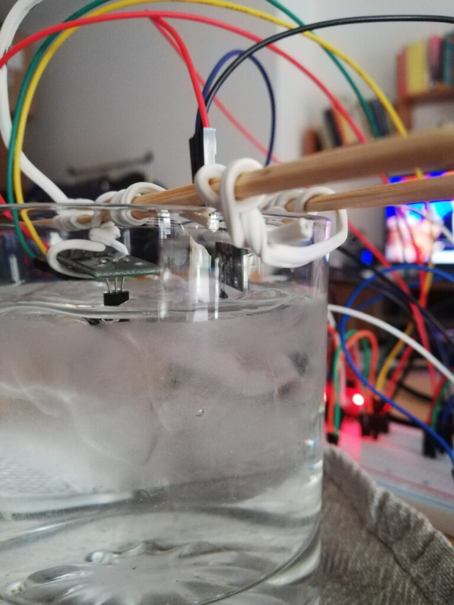
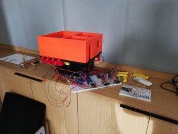
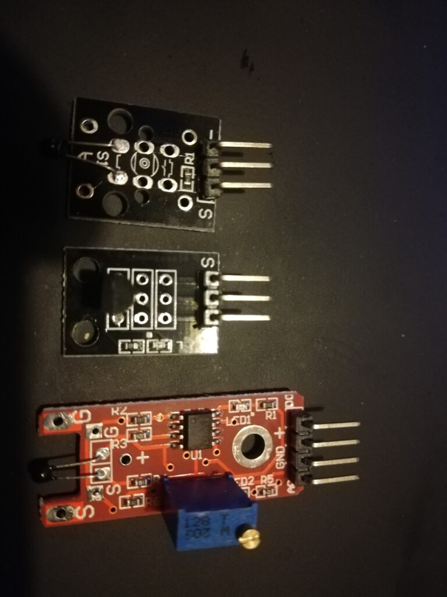
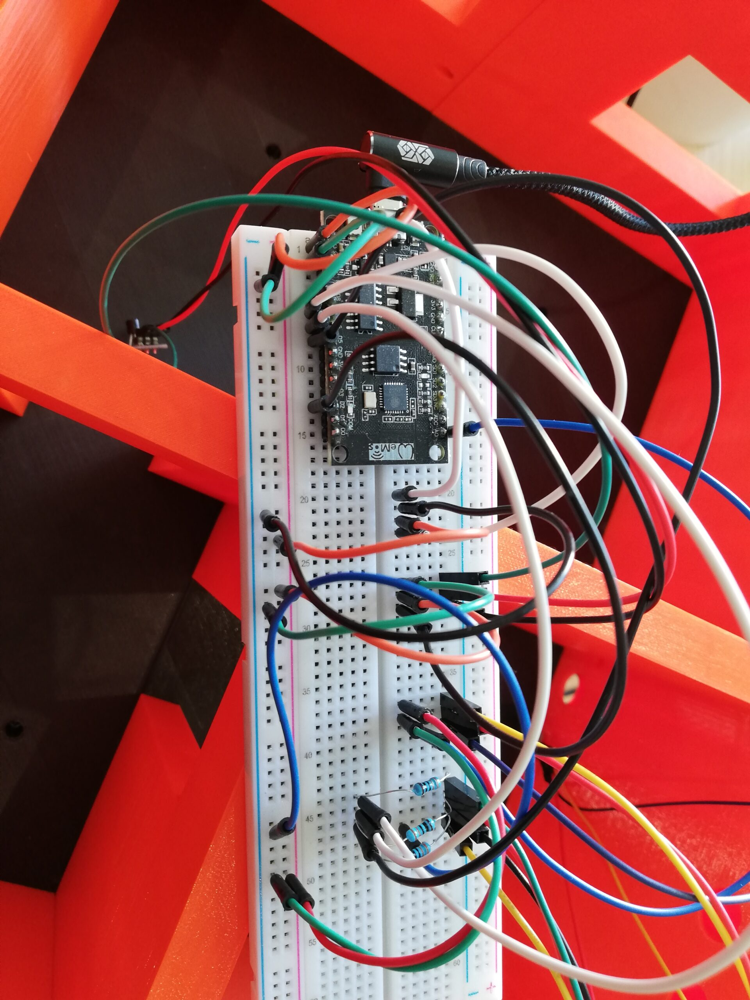

Intive Patronage 2020




An ESP8266-based temperature sensor library supporting both analog and digital sensors, developed as part of the Intive Patronage 2020 program (Szczecin, embedded track). The library uses MQTT for real-time data transmission to a central server, enabling efficient temperature monitoring within a smart home ecosystem.
Check out the project on GitHub: Temperature Sensor on GitHub
Back to Portfolio